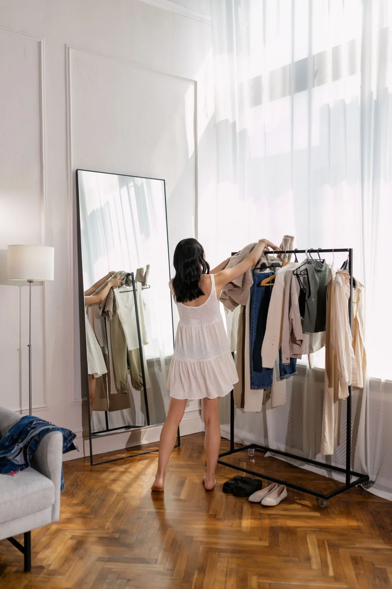

Посадка
Проверьте, удобно ли сидеть, двигаться и поднимать руки.
ЖЕНСКАЯ ОДЕЖДА · ТЦ МАНГО
Магазин женской одежды в ТЦ «Манго»
Женская одежда на каждый день, для работы и особых случаев. Посмотрите актуальные модели и размеры в магазине на втором этаже.

Mil-mik shop / О ПОДХОДЕ
Подумайте, куда вы будете носить новую вещь, с чем сочетать и насколько часто. Такой список делает примерку полезнее и помогает выбирать внимательнее.
ПОЛЕЗНО ПЕРЕД ОБРАЩЕНИЕМ
Сфотографируйте вещи, с которыми хотите сочетать покупку. Приходите в удобной одежде и подходящей обуви.
Подготовить запрос ↗ВЫБРАТЬ НАПРАВЛЕНИЕ
Выберите то, что ближе к вашей задаче.
Запишите требования к удобству и дресс-коду. Вспомните обувь и верхнюю одежду.
Составить обращение ↗ВАШ СЛЕДУЮЩИЙ ШАГ
Несколько деталей помогут точнее обсудить задачу. Полученный текст можно скопировать для сообщения или использовать при звонке.
ТЕКСТ НЕ ОТПРАВЛЯЕТСЯ АВТОМАТИЧЕСКИ
ПАМЯТКА
Проверьте, удобно ли сидеть, двигаться и поднимать руки.
Представьте хотя бы два сочетания с вещами, которые уже есть дома.
Изучите маркировку и рекомендации по уходу перед покупкой.
ПЕРЕД ВИЗИТОМ
Актуальный ассортимент и наличие моделей уточняйте в магазине.
Размерную сетку и наличие конкретных моделей уточняйте у сотрудников.
Подумайте о подходящей обуви и вещах, с которыми планируете сочетать покупку.
КОНТАКТЫ
Магазин женской одежды · 2 этаж
Часы работы и детали визита уточните перед обращением.